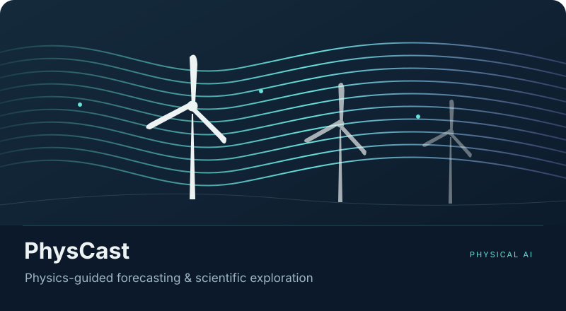
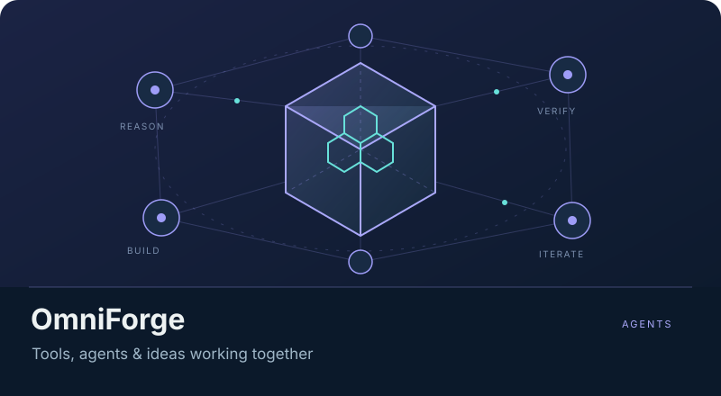
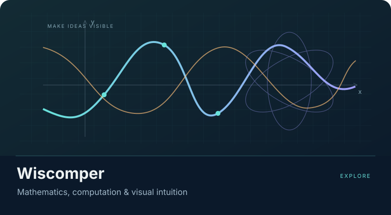

01 / PHYSICAL AIPhysCast
从物理，走向预测。
在稀疏观测下理解风场变化。连接物理仿真、生成式预测与独立验证，探索模型何时可靠、何时需要说“不确定”。
了解研究方向
围绕控制干预后的风场响应，组织 FAST.Farm / OpenFAST 仿真、时序预测与外部数据验证。当前为持续研究的软件平台，具体能力以对应实验的验证范围为准。
浙江大学学生 / Zhejiang University
RESEARCH · BUILD · EXPLAIN
让 AI 理解物理，
让知识看得见。
你好，我是 rainbow鱼。我探索物理世界中的 AI，
构建工程智能体，也把复杂的科学讲成可探索的故事。
在真实问题与想象力之间，持续探索。
SCROLL TO EXPLORE01 / SELECTED WORK
从物理预测到工程设计，从数学动画到科学叙事。
这些是我正在研究、构建和分享的方向。

01 / PHYSICAL AI从物理，走向预测。
在稀疏观测下理解风场变化。连接物理仿真、生成式预测与独立验证，探索模型何时可靠、何时需要说“不确定”。
围绕控制干预后的风场响应，组织 FAST.Farm / OpenFAST 仿真、时序预测与外部数据验证。当前为持续研究的软件平台，具体能力以对应实验的验证范围为准。

02 / ENGINEERING AGENTS从意图，走向证据。
把自然语言需求变成可调整的工程任务。让建模、计算、工具协作与交付记录在同一个工作台里发生。
覆盖可视化建模、有限元与拓扑优化、执行轨迹和设计报告。保留输入、日志和输出之间的对应关系，让过程可检查、经验可复用。

03 / VISUAL LEARNING连接几何、网格、拓扑优化与物理计算，探索从自然语言需求到设计交付的验证闭环。
从视觉、生成模型到智能体，用动态演示和可复现实验解释 AI。六章路线，前五章资料已整理。
把问题变成故事，把机制变成画面。组织科学影像、AI 视频编辑与可复用的 Manim 动画组件。
02 / A LITTLE ABOUT ME
我是俞天翼，浙江大学学生，
也在以 rainbow鱼 的名字持续创作。
我感兴趣的是模型与世界相遇的地方：一次预测有没有物理依据，一个智能体能否把想法做出来，一段动画能否让复杂机制变得清楚。
研究、写代码、做可视化，对我来说是互相连接的事。把问题拆开，亲手做出来，再让别人也能看懂。
PHYSICAL AI
物理约束、风场与世界模型，关注控制响应、稀疏观测和模型可靠性。
Python · PyTorch · OpenFASTAGENTIC ENGINEERING
把自然语言、建模与计算连接起来，保留过程，让结果有据可查。
Agents · FEM · OptimizationVISUAL STORYTELLING
用数学动画、交互场景与科学影像，把抽象关系变成直观的理解。
Manim · Three.js · Remotion03 / SAY HELLO
如果你也关注物理 AI、工程智能体、数学可视化，
或者只是想聊聊一个有趣的想法，欢迎找到我。